Half the steps, and fewer missed risks.
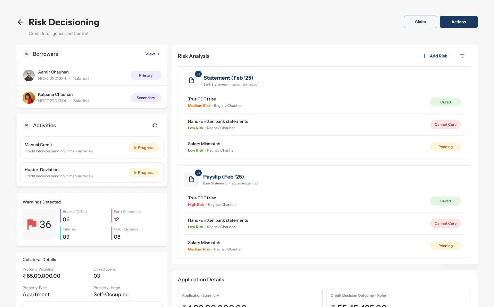
Before a bank lends you money, someone reads your paperwork.
That someone usually works for a credit bureau or verification agency: a third party the bank pays to judge how risky your documents are. My client builds the software they do it in.
You
apply for a loan and upload payslips, statements, ID.
The bank
sends the application out for a credit check.
A reviewer
goes through it document by document, risk by risk.
A decision
moves the application forward, or stops it.
A risk is anything that doesn’t add up.
Sometimes it’s obvious. Often it’s two words.
Payslip · Feb
Bank statement · Feb
Every risk ends in a decision.
A reviewer rules on each document, and those rulings add up to a verdict on the whole application. Get one wrong and it carries into every step after.
On each documentrepeated for every risk
On the applicationonce, at the end
Four kinds of decision-makers.
Different jobs, same screen. Each team I worked with spoke for one of them.
Agency verifiers
External agencies who verify a customer’s credit records on the bank’s behalf.
Underwriters & credit officers
Match credit bureau data against the bank’s risk policy to set eligibility and interest rates.
Fraud risk analysts
Watch credit reports for application fraud, identity theft and compromised profiles.
Relationship managers
Pull a preliminary report, with consent, for customers in branch.
There’s an existing flow similar to this. Just finish it off.
The old flow was too flexible for a job that never changes.
What the old flow was for
Comparing anything with anything: a document against a dashboard, another module, any section.
What reviewers actually do
The same call, risk after risk, hundreds of times a day.
Flexibility helps when you’re exploring. Here, every extra option was just another click.
So I walked it, click by click.
Closing a single risk took eight steps. The redesign does it in four.
Multiply it out and the problem is obvious.
10documents× 4risks each× 8steps each =320steps a day
One dot per step. At the top of the daily range.
Before drawing anything, I asked a lot of questions.
Q1Is cure / cannot cure the main thing they do?
Q2If the learning curve is steep, how do we catch mistakes?
Q3Are they the final decision makers, or does it go further?
Q4Do they get any training before using the flow?
Q5Does the backend know which type each document is?
Q6How are risk types added, and do users know what each means?
Q7What are the first five things they look for?
+439,847more, over some very long meetings
…and drew my own version alongside the answers.
What does one risk look like?
How much should a risk card say?
A risk is either untouched or resolved, and the card has to make that obvious. I tried hierarchy after hierarchy with the other teams, to learn which details actually mattered.
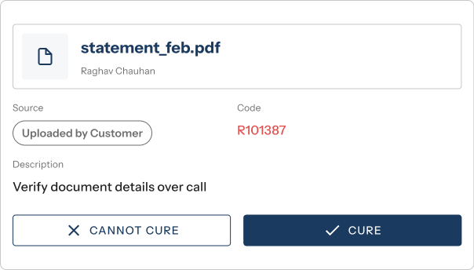
Action first
- The decision is the biggest thing on the card. One glance says cure or not.
- The buttons outweigh the reason for the risk.
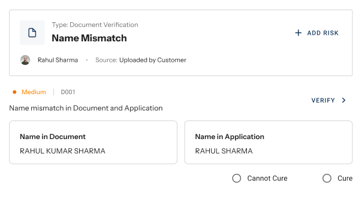
Evidence first
- Both conflicting values side by side, so the reviewer sees why before deciding.
- Only works for risks with two values to compare.
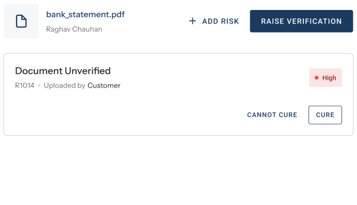
Document first
- Risks sit under their file, and escalation is one click away.
- The document header takes space on every card.
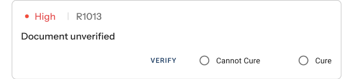
Form first
- Radio buttons say only one outcome can be picked. This was asked for, to show the choice is exclusive.
- Feels like filling in a form, not making a call.
Actions on demand
Chosen- Key facts first. Cure, Cannot cure and Verify appear on hover, so the risk is read before it’s acted on.
- No wall of identical buttons on every card.
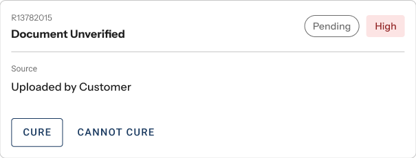
Status first
- What’s done and what’s left, at a glance.
- Status pushes the risk itself down the card.
The one that worked
The one that worked
Key facts first, actions on hover. No wall of identical buttons, and the reviewer reads the risk before acting on it.
- 1Cure
- 2Cannot cure
- 3Verify
Every team agreed all three carry equal weight, so none is styled as primary.
Iteration only pays off with steady feedback. It’s what told me which changes mattered.
How do you see the whole application?
Sort the dashboard by document, or by risk?
Teams wanted different groupings. I built the options as dashboard widgets and took them back to each team to rank.
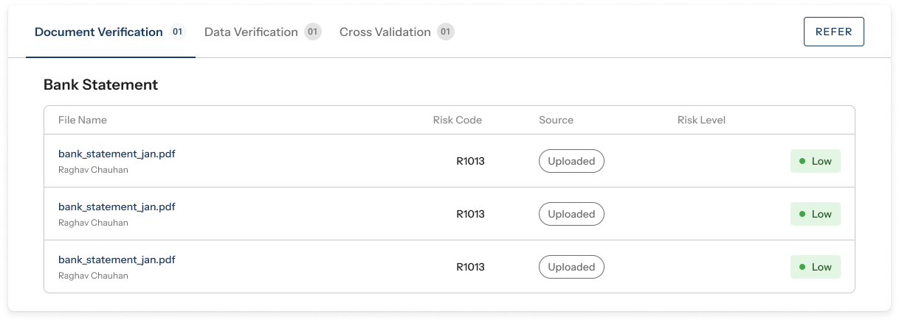
Plain table
- One tab per verification type, one row per file. Familiar.
- Says nothing about what’s wrong. Every row looks the same.
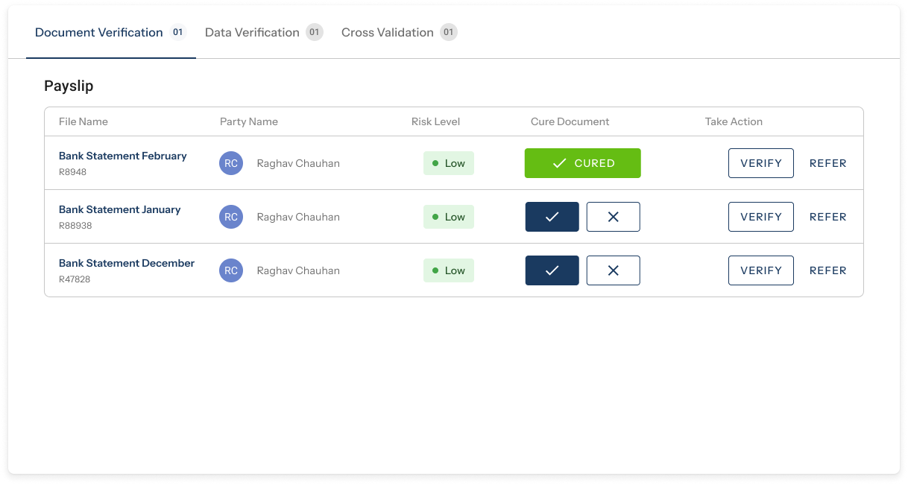
Table with actions
- Cure or cannot cure right in the row, with Verify and Refer beside them.
- Buttons on every row invite a call before the risk is read.
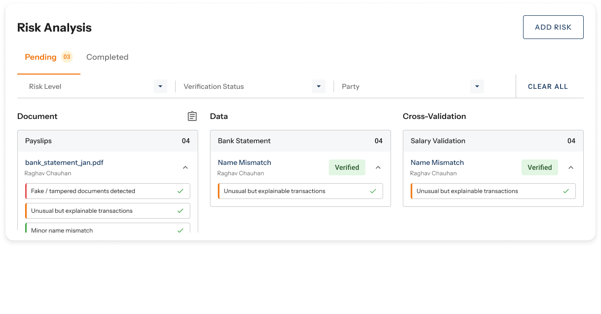
Three columns, nested
- Document, Data and Cross-validation side by side, filters on top.
- Narrow columns. Risks get cut off and scroll inside each box.
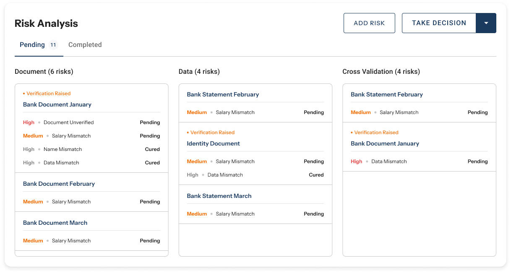
Three columns, with status
- Each risk shows its level and whether it’s pending or cured.
- The same document turns up in more than one column.
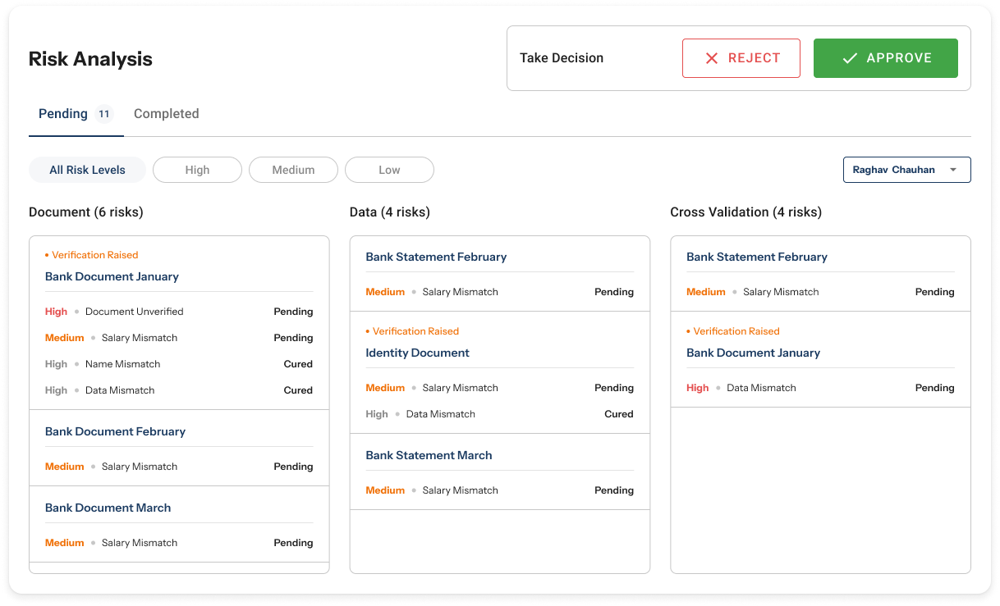
Three columns, with decision
- Filter by risk level or party. Approve and Reject always in reach.
- Approve sits next to pending risks, which tempts an early call.
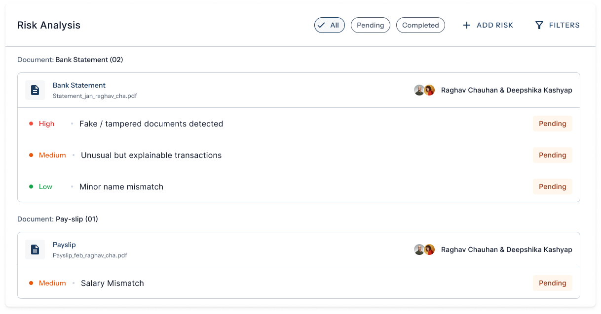
By document
Chosen- One list. Every risk sits under the file it came from.
Six ways to group the dashboard, shown with placeholder data. Each team ranked them.
By document, with the risks inside

By document, with the risks inside
The dashboard tells reviewers what they’re walking into before they open a single risk.
- 1Filters on top
- 2Risks grouped under each document
- 3A status: cured or pending
Reviewers find and narrow what they need without holding the whole application in their head.
What happened next.
When a stakeholder is sure about a flawed direction, I now build it before arguing against it. Walking through it together settled the debate faster than any deck would have.
I had no say over the final call, so I focused on making the trade-offs easy to see. Once each team could see what they were giving up, agreeing on one direction got easier.
A few months after launch, the bank shut down the old entry point. Nobody asked for the old flow back.